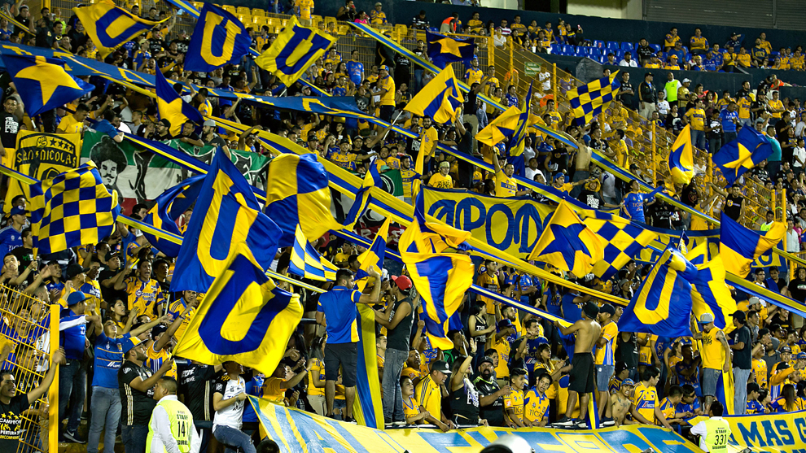
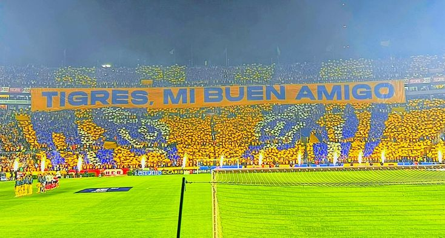

Me gusta mucho el fútbol; es una de mis grandes pasiones. El equipo al que apoyo son los Tigres de la UANL. Me siento profundamente identificado con sus colores, su historia y, sobre todo, con la pasión de su afición. Una de las cosas que más me atrajo del equipo fue precisamente eso: el ambiente tan vibrante y colorido que se vive en cada partido. Asistir al Estadio Universitario es una experiencia que disfruto mucho. Me encanta estar en las tribunas, rodeado de gente que comparte la misma emoción, cantando, apoyando, y siendo parte de ese espíritu colectivo que hace único al equipo.
 El partido que mas he disfrutado ha sido contra el Club Atletico River Plate en la fase de grupos de la Copa Libertadores de America.
Ese dia me toco ver el partido desde las tribunas de la puerta 5B junto con mi hermano y dos primos.